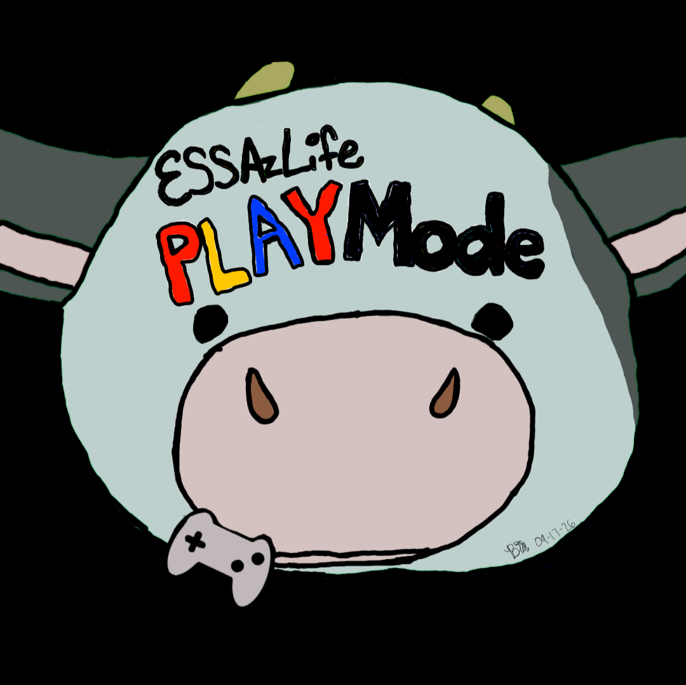

ESSAzLife Play ModeWhere would you like to go?
News and announcements from ESSAzLife PlayMode!
🪙 Coin Pickups:
ESSAs will now automatically help collect
MooCow Coins when they are in the Playroom!
🐾 Sit & Stay Commands:
Users can now tell their ESSAs to Stay
by clicking on an ESSA and selecting
the Stay button. Once activated, the
ESSA will remain in place until the
user selects Wander.
👤 Guest Mode:
Developer Raising Floofz has introduced
a third login option: Guest Mode!
Guest users can still create and restore
backup files. We strongly encourage
guests to download their backup files
to protect their progress.
🎃 Holiday Voidy Dog Bug Fixes:
Limited-edition Holiday Voidy Dogs will
now appear exclusively on the first Pets
page of Voidy's Store, keeping the Custom
ESSAs page reserved for custom companions.
Thanksgiving and Christmas Voidy Dogs have also been tested and confirmed to work with the existing pet care and interaction features. Their scheduled release dates remain unchanged.
This is where you'll find information about new features, improvements, and announcements. The app went live on Thursday, October 1, 2026 at 4pm After being tested by my testers thoroughly. Today, October 9, 2026, I have removed the switch tab and changed the navigation tabs to emojis, and removed the email entry requirement for PlayMode users, as well as adding the updates tab. The next update is scheduled for: Sunday, November 1st, 2026.
ESSAzLife World is the new home for our apps! 🐮💙
✨ Automatic Updates
Get the newest features and improvements through World!
🏠 Everything in One Place
Access PlayMode, Handler Edition, Chorez, and future apps
from one convenient hub!
👤 One World Account
Access your apps through your ESSAzLife World account.
🎉 Future Releases
New features and content will be released through World.
The standalone apps will remain available in their current versions.
📁 Bringing Your Progress?
Create a backup file in your standalone app's Profile tab.
Then open the matching app inside ESSAzLife World and
restore your backup file!
💙 Prefer to Stay Here?
That's perfectly okay! You can keep using this standalone
version without switching. The choice is yours!